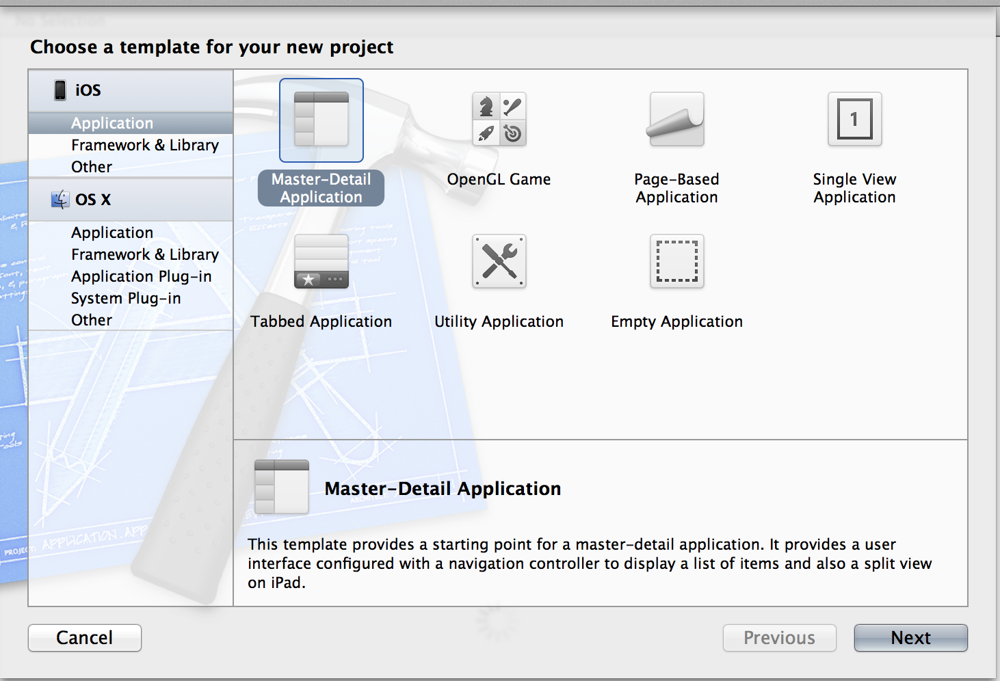

Lab 1: Core Data with Magical Record, including library management using Cocoapods
Lab was held on Sept 11th, 2012 @ Science Gallery, Dublin. Special thanks to everyone who attended, sorry we didn't take a roll call or photos.
TL;DR
This is a living document and will be updated over time.
Sample code from the lab is available at http://xcakelabs.com/labs/lab1/samplecode.zip
Libraries used: "Cocoapods - The Objective-C Library Manager" and Magical Record. Both Magical Record and Cocoapods uses a MIT license - go nuts!
Intro
The purpose of the lab was to demonstrate how you can reduce the amount of "boilerplate" code required when using Apple's Core Data library. This was achieved using the Magical Record library, which bills itself as "Super Awesome Easy Fetching for Core Data".
The basic flow of the lab was:
- Create a working Core Data app from an Apple supplied template, using XCode 4.x.
- Bring in Magical Record using Cocoapods Library Management.
- Rip out as much Apple boilderplate code as possible and replace with simple Magical Record calls.
- Review how much smaller and focused the app is with Magical Record.
Handy links
- Magical Record: https://github.com/magicalpanda/MagicalRecord
- Magical Record Handy reference calls
- Getting started with CocoaPods
Notes
The sample app was created from a XCode template using these settings:
